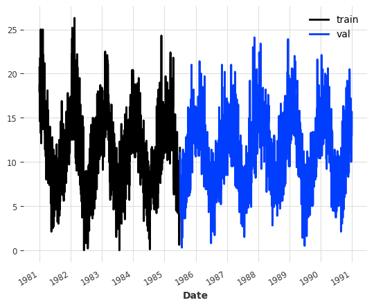

/home/thekkel/mambaforge/envs/cfast/lib/python3.11/site-packages/neptune/internal/backends/hosted_client.py:51: NeptuneDeprecationWarning: The 'neptune-client' package has been deprecated and will be removed in the future. Install the 'neptune' package instead. For more, see https://docs.neptune.ai/setup/upgrading/
from neptune.version import version as neptune_client_version
/home/thekkel/mambaforge/envs/cfast/lib/python3.11/site-packages/pytorch_lightning/loggers/neptune.py:51: NeptuneDeprecationWarning: You're importing the Neptune client library via the deprecated `neptune.new` module, which will be removed in a future release. Import directly from `neptune` instead.
import neptune.new as neptune
Read and format
Here we simply read the CSV file containing daily temperatures, and transform the values into the desired format.
ts = TemperatureDataset().load()
Constructing TimeSeries instances for training and validation
train, val = ts.split_after(pd.Timestamp("19850701"))train.plot(label="train")val.plot(label="val")

Basic FFT model
model = FFT(required_matches=set(), nr_freqs_to_keep=None)model.fit(train)pred_val = model.predict(len(val))
The plot below shows us that a simple DFT with a random train-test split will most likely lead to bad results. Upon closer inspection we can see that the prediction (in purple) simply repeats the training set (blue). This is the standard behavior of the DFT, and by itself it is quite useless, since repeating our training set could be done much more efficiently. Three improvements were made to this approach.
The first improvement consists of cropping the training set before feeding it to the FFT algorithm such that the first timestamp in the cropped series matches the first timestamp to be predicted in terms of seasonality, i.e. it has the same month, day, weekday, time of day, etc. We could achieve this by passing the optional argument required_matches to the FFT constructor that explicitly tells our model which timestamp attributes are relevant. But actually, if we don’t set it manually, the model will attempt to automatically find the pd.Timestamp attributes that are relevant and crop the training set accordingly (which we will do here).
model = FFT(nr_freqs_to_keep=None)model.fit(train)pred_val = model.predict(len(val))
We can see that the results look like the seasonality of the predictions nicely aligns with the seasonality of the validation set. However, we are still just repeating the training set, including all of the noise. Looking at the error we can see that this is still a pretty bad forecast.
The decomposition of the DFT into the frequency domain allows us to selectively filter out waves with low amplitudes. This allows us to keep strong seasonal trends while discarding some noise. This is achieved in the FFT model by passing the optional argument nr_freqs_to_keep. This argument represents the total number of frequencies that will be kept. For instance, if a value of 20 is passed, only the 20 frequencies with the highest amplitudes will be utilized. The default value is set to 10.
model = FFT(nr_freqs_to_keep=20)model.fit(train)pred_val = model.predict(len(val))
We get a signal that is less noisy. Depending on the data set, this might be a better forecast. Looking at the error metric, we can see that this model performs significantly better than the previous models.
This problem can be solved by setting the optional trend argument to either ‘poly’ or ‘exp’, which fits a polynomial or exponential funtion to the data and subtracts it before moving on to DFT. When predicting, the trend is added again.
model = FFT(trend="poly")model.fit(train)pred_val = model.predict(len(val))
Instead of simply looking at the performance of the FFT model, we can also look at how a bunch of other forecasting models performs on this new data set in terms of MAE. Surprisingly, on this dataset, the FFT model outperforms all of the others (at least with their default parameters). Granted, this dataset was specifically chosen because of its highly seasonal nature. However, this shows us that there are use cases for FFT. Furthermore, the FFT model has a much shorter running time than the other models!
models = [AutoARIMA(), Theta(), FFT()]train.plot(label="train")val.plot(label="val")for model in models: model.fit(train) pred_val = model.predict(len(val)) pred_val.plot(label=f'{model}')print(str(model) +" MAE: "+str(mae(pred_val, val)))